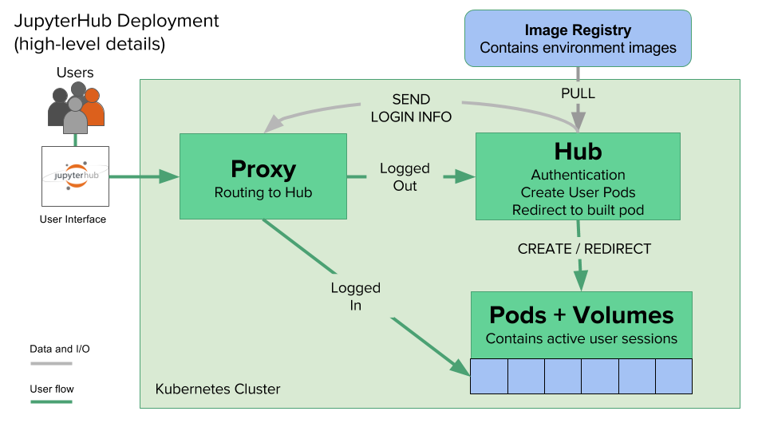

The JupyterHub Architecture¶
The JupyterHub Helm Chart manages resources in the cloud using Kubernetes. There are several moving pieces that, together, handle authenticating users, pulling a Docker image specified by the administrator, generating the user pods in which users will work, and connecting users with those pods.
The following diagram gives a high-level overview of the many pieces of JupyterHub, and how they fit together in this process:
